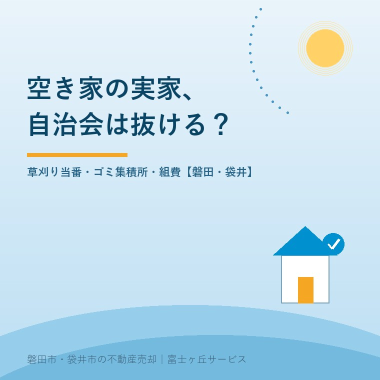

2026年8月12日｜カテゴリ：地域と不動産／売却実務

この記事の要点
Q. 母が施設に入って実家は空き家です。誰も住んでいないのに組費の集金が来ますし、草刈りの当番表も回ってきます。自治会って、抜けられるものなんでしょうか。
A. 法律上は、抜けられます。自治会・町内会は法律で加入が義務づけられた団体ではなく、最高裁判所は平成17年4月26日の判決で、強制加入団体でなく規約に退会を制限する規定もない自治会について、「いつでも一方的意思表示により退会することができる」と判断しています。ただし、実家の場合は「抜けられるか」より先に考えるべきことがあります。ゴミ集積所の管理者が自治会であること、防犯灯の電気代を自治会が払っていること、そしていずれ買主に引き継がれる条件だからです。おすすめの順番は、①退会の前に「休会・非居住扱い・会費減額」が可能か組長に相談する ②できない場合も、ゴミ集積所の使用について当番参加や管理費負担の申し出をセットで行う ③会費・当番・集積所のルールを紙にまとめ、売却時の説明材料にするの3つです。磐田市・袋井市・森町では、介護施設の運営から不動産事業を始めた富士ヶ丘サービスのような「介護×不動産」専門の会社に相談するという選択肢があります。
お盆に帰省された方から、この時期いちばん多く聞くのがこの話です。
「親が施設に入って、家は空いている。それなのに、組費の集金だけは毎月来る」「秋の清掃当番の表が回ってきたが、名古屋から出てこられない」「隣の方に頭を下げて代わりに出てもらっている」。
金額としては、月に数百円から千数百円という話がほとんどです。それでも気持ちが重くなるのは、お金の問題ではなく、「誰も住んでいない家のために、いつまで地域に迷惑をかけるのか」という後ろめたさがあるからだと思います。
今日は、この問題を法律・地域の実務・売却の3つの面から整理します。内容は2026年8月12日時点で公表されている情報に基づきます。
自治会・町内会は、地方自治法上の「地縁による団体」として認可を受けることはできますが、住民に加入を義務づける法律はありません。弁護士会・自治体の説明でも、加入は任意であるという整理が一般的です。
裁判所の判断も出ています。最高裁判所第三小法廷 平成17年4月26日判決（平成16年（受）第1742号・自治会費等請求事件）は、県営住宅の入居者で構成される自治会について、次の趣旨を示しました。
会員相互の親睦、快適な環境の維持管理、共同の利害への対処などを目的として設立された団体であり、いわゆる強制加入団体でもなく、その規約において会員の退会を制限する規定を設けていないという事情の下では、会員はいつでも当該自治会に対する一方的意思表示により退会することができる。
「話し合って認めてもらう」必要はない、という点が重要です。退会は、相手の承諾を条件とする契約ではなく、こちらの意思表示で足りる。これが最高裁の立場です。
磐田市自治会連合会も、Q&Aの中で「自治会への加入は任意であり、強制ではありません」とはっきり書いています。役員や当番についても「強制ではありませんので、ご都合に合わせて参加してください」という説明です。
ですから、結論としては「抜けられます」。ただし、私が実務でお勧めするのは、いきなり退会届を出すことではありません。理由を次に書きます。
ここが最大の論点です。磐田市は、よくある質問の中でこう明記しています。
「ごみの集積所は自治会で管理しておりますので、お住まいの地区の自治会にお問い合わせください。」
袋井市も、防犯灯やごみ集積所の維持管理は自治会が行っているという説明で、ごみ集積所の設置・修繕を行う自治会に対して補助金を交付しています。
つまり、「収集する」のは市ですが、「置き場所を用意し、掃除し、ネットやカゴを買い替えている」のは自治会です。ここに、未加入者が使えるかどうかという全国共通の摩擦が生まれます。
国立環境研究所が2022年3月に公開した解説によれば、つくば市が2019年に行った調査（回答402人）では約7割の自治会が「自治会未加入者の利用を許可していない」と回答し、2020年の全国市町村調査では70%の市町村で、未加入者がごみ集積所を使えないというトラブルが起きているとされています。利用を認めている自治会でも約半数は料金を徴収しており、年500円〜12,000円と幅があるそうです。
磐田市自治会連合会のQ&Aは、この点について踏み込んでいます。自治会に加入しない場合でも、ごみ当番への参加や管理費の支払い等によりごみ集積所を使用できるよう、市から自治会にお願いをしているという趣旨の記載です。管理そのものは自治会が行っているため、利用については自治会へ相談してほしい、と続きます。
これは、退会を考える方にとって非常に実務的な指針です。「抜けます、以上」ではなく、「抜けますが、集積所の管理費はお支払いします」と申し出るかたちにする。これで地域との関係は大きく変わります。
磐田市自治会連合会は、会費の使途として「防犯灯の電気料金や災害時の備蓄品・防災訓練経費など」を挙げています。実家の前の道を照らしている灯りは、組費から出ているかもしれません。
空き家であっても、その道は使われますし、防犯上、灯りがあることは所有者にとっても利益です。「使っていないから払わない」と言い切りにくいのは、このためです。
もうひとつ、見落とされがちなのが連絡網です。空き家で異変（雨漏り、瓦の落下、不審者、火災）があったとき、最初に気づくのは近所の方です。自治会から完全に離れると、その連絡先が地域から失われます。
退会するにせよ残るにせよ、組長さんに携帯番号を書いた紙を1枚渡しておく。これだけで空き家管理の質が変わります。電気も水道も止めた実家に、夏の一か月で起きることで書いたとおり、無人の家の劣化は、気づくのが早いほど安く直せます。
実務では、次の3択で考えます。
| 選択肢 | 内容 | 向いている状況 |
|---|---|---|
| ①そのまま継続 | 会費を払い続け、当番は近隣に依頼するか欠席金で対応 | 売却の予定が1年以内。関係を波立たせたくない |
| ②休会・非居住扱いを相談 （まず最初に検討） | 「空き家のため当番不参加、会費は◯割」など個別の取り扱いを組長・自治会長に相談 | 大半のケース。柔軟に対応してもらえることが実際に多い |
| ③退会する | 書面で退会の意思表示。ゴミ集積所の管理費負担は別途申し出る | 相続で長期保有が確定。当番が物理的に不可能 |
私が最初に勧めるのは②です。自治会の側も、空き家が増えて当番が回らないことは分かっています。「出られないのに名前だけ残っている」ほうが、実は現場は困る。「うちは空き家なので当番は外してください。会費はお納めします」と先に言われるほうが、地域はずっと助かります。
②が通らない、あるいは会費が負担で③を選ぶ場合は、必ず書面（簡単なもので構いません）で、日付・住所・氏名・退会する旨・連絡先を残してください。口頭だけだと、翌年また集金が来ます。
当番の話に戻ります。磐田・袋井の自治会では、春から秋にかけて、河川・水路・公園・公民館周りの清掃が数回あります。農区がある地区では、水路の泥上げが加わります。
遠方の方がこれに出るのは現実的ではありません。多くの自治会では欠席の場合に出不足金（数百円〜数千円）を納める運用があり、これで清算できます。地区によって呼び名も金額も違うので、組長さんに聞くのが早道です。
ただし、「自治会の当番」と「自分の敷地の草」は別問題です。ここを混同すると、いちばん厄介なことになります。
自治会を退会しても、実家の庭から道路や隣家へ伸びた草木の責任は、所有者に残ります。2023年4月に施行された改正民法では、越境した枝について一定の条件下で隣地の側が自ら切り取れるようになりました。詳しくは隣の空き家の草や枝が越境してきたら？に書いています。会費を払っているかどうかとは無関係に、草は苦情になります。年2回、お盆と年末に業者へ頼むだけでも、地域の目は変わります。
ここからが不動産の話です。
自治会の条件は、買主にとって「毎月の固定費」と「毎年の拘束時間」です。売買代金や固定資産税ほどの金額ではありませんが、知らされていなかったときの心証がとても悪い。「聞いていない」は、引渡し後のトラブルの典型的な入口です。
私が売主にお願いしているのは、次の項目を1枚にまとめておくことです。
| 買主に伝える項目 | 具体例 |
|---|---|
| 自治会（組）の名称・組長の連絡先 | ◯◯自治会 △組。引継ぎの窓口になる |
| 会費の額と集金方法 | 月◯円／年◯円、集金は毎月◯日に組長が回る、口座引落 など |
| 会費以外の負担金 | 祭典寄付、公民館建設積立、赤い羽根等の一括徴収、農区費・水利費 |
| 当番・役の頻度 | 清掃年◯回、ゴミ当番◯週に1回、班長は◯年に1回まわってくる |
| ゴミ集積所の場所と使い方 | 徒歩◯分の位置、ネットの管理当番、収集曜日 |
| 加入は任意である旨 | そのうえで地区の実情（ほぼ全戸加入 など）も正直に伝える |
「自治会費が月500円」と書いてあるだけで、買主の不安はほぼ消えます。逆に空欄だと、買主は最悪を想像します。契約不適合責任と告知の実務でも書いたとおり、不動産取引では「悪い情報を隠さないこと」が、結果的にいちばん高く売れる方法です。
なお、退会したまま売る場合も問題ありません。買主が改めて加入すればよいだけです。むしろ「前の所有者が空き家の間は退会していた。加入は新所有者の判断」と説明できるほうが、話は単純になります。
ここは正直に書きます。磐田市・袋井市では、地区によって自治会の性格がかなり違います。
旧市街・旧集落（見付、中泉、豊岡、竜洋・福田の集落部、袋井の旧宿場周辺など）では、自治会は「組」を基礎単位として長い歴史があり、祭典・神社の氏子・農区・水利が重なります。会費のほかに祭典寄付があるのが普通です。当番も具体的です。その分、空き家への目配りは手厚い。草が伸びれば連絡が来ますし、雨戸が外れていれば知らせてくれます。
昭和後期以降の分譲地・新興住宅地では、自治会は比較的軽く、会費のみ・当番は年1〜2回というところもあります。転入者が多いため、加入・非加入の扱いにも慣れています。
つまり、「実家の自治会は抜けられるか」の答えは、地区で温度が違う。だから、一般論で決めずに、まず組長さんに聞いてください。電話1本で、たいていの話は片付きます。私の実感では、こじれるのは「何も言わずに払わなくなった」ケースです。言えば通り、黙ると角が立つ。これは20年変わりません。
当社は、磐田市見付で介護施設を運営するところから不動産の仕事を始めました。ご相談の入口は、たいてい「親が施設に入った」「親を看取った」です。
この記事のテーマは、まさにその直後に起きます。親が施設に入った月から、実家は「誰も住んでいないのに地域の一員である家」になります。会費、当番、回覧板。どれも小さなことですが、遠方のご家族には確実に効いてきます。
私たちは、売却のご依頼をいただく前でも、組長さんへの伝え方や、当番の外し方の相談に乗っています。地元の会社なので、地区ごとの実情が分かるからです。目指しているのは「高く売る」だけではなく、「家族が困らない売却」です。地域との関係を壊さずに実家を手放すことは、その大事な一部だと思っています。
事実の整理には、ふじがおか実家カルテをお使いください。
「抜けられますか」と聞かれたら、私はいつも「抜けられます。でも、その前に一度だけ相談してみませんか」とお答えしています。実家が空き家になったことを地域が知っているかどうかで、その家の5年後は変わります。
ふじがおか実家カルテ｜自治会・当番・集積所の引継ぎもご相談ください
組費の集金が来る家を、そのままにしない。
住所をもとに、名義と相続登記、道路・境界、農地の有無、そして地区の自治会の実情を整理し、次に何を確認すべきかを1枚にしてお出しします。作成料0円・入力約1分。申込みだけで売却依頼にはなりません。
本記事は2026年8月12日時点で裁判所・磐田市・磐田市自治会連合会・袋井市・国立環境研究所等が公表している情報に基づく一般的な解説であり、個別の自治会における取扱いを保証するものではありません。自治会の規約・会費・当番・出不足金・ごみ集積所の使用条件は地区ごとに大きく異なります。最高裁平成17年4月26日判決は当該事案（県営住宅の入居者で構成される自治会で、規約に退会を制限する規定がない場合）についての判断であり、規約の内容によっては結論が異なり得ます。退会・休会の可否や具体的な手続は、必ずお住まいの地区の自治会長・組長へご確認ください。ごみ集積所の利用については磐田市ごみ対策課・袋井市の担当課および地区の自治会へ、越境した草木の取扱いや近隣とのトラブルについては弁護士へご相談ください。売買時の説明事項の取扱いについては、担当の宅地建物取引業者にご確認ください。個別のご相談は当社までどうぞ。

この記事を書いた人：大石浩之（宅地建物取引士）
磐田市・袋井市・森町で「介護×相続×空き家」に特化した不動産売却支援を行う富士ヶ丘サービスの代表取締役・宅地建物取引士。介護施設の運営から不動産事業を始めた経験をもとに、売主とご家族が困らない売却を一件ずつお手伝いしています。プロフィール
磐田市・袋井市・森町の実家じまい・相続空き家相談
固定資産税通知書だけでも相談できます
住所があいまいでも、通知書や写真から名義・道路・農地・残置物の確認順を整理します。カルテ申込またはLINEで状況を送ってください。
富士ヶ丘サービス株式会社／静岡県磐田市見付5789番地1／TEL:0538-31-3308／静岡県知事 (2) 第14083号／代表取締役・宅地建物取引士 大石 浩之